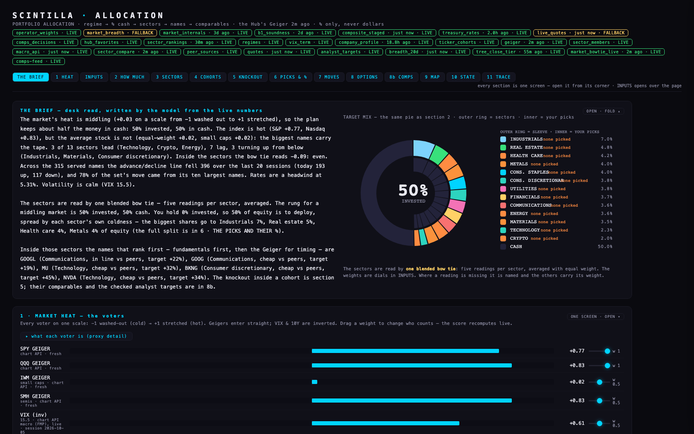
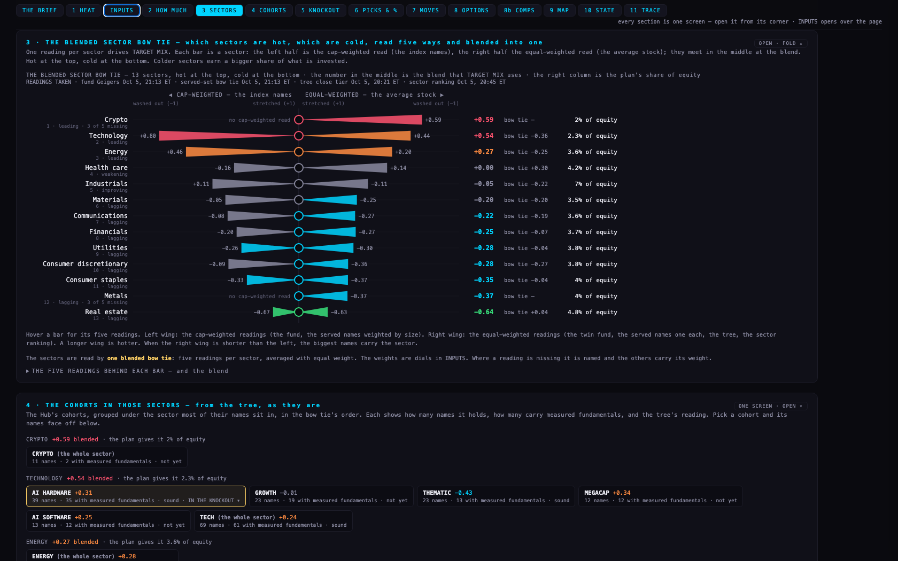
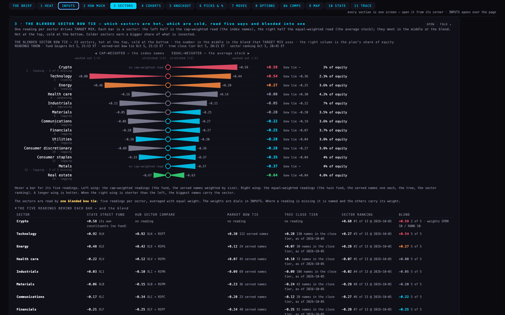
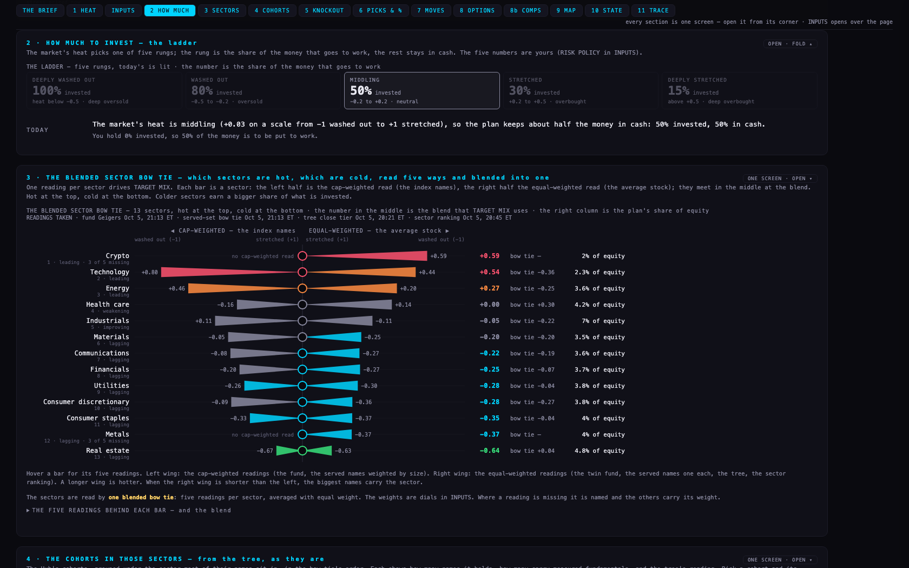
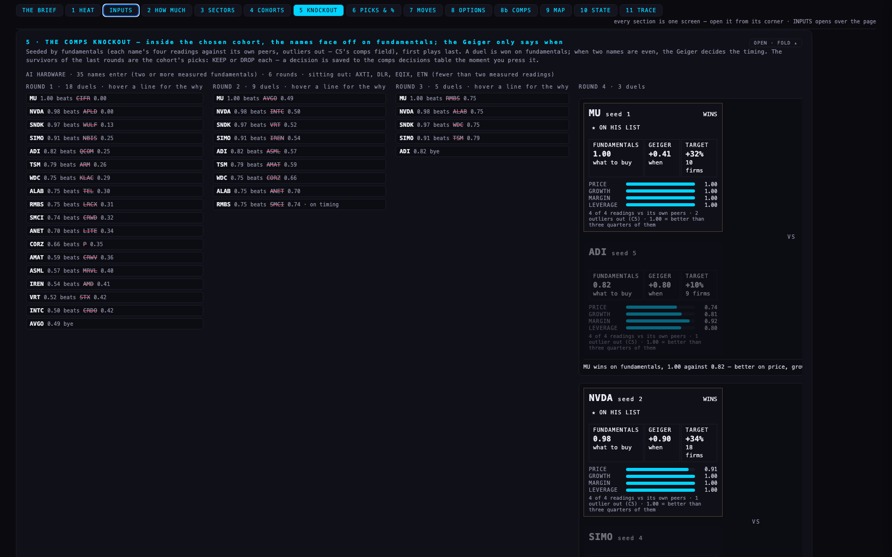
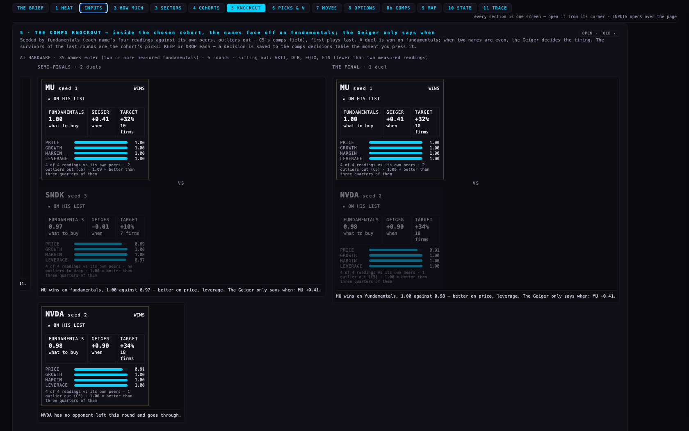
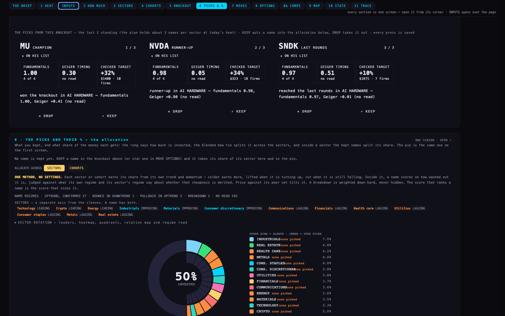
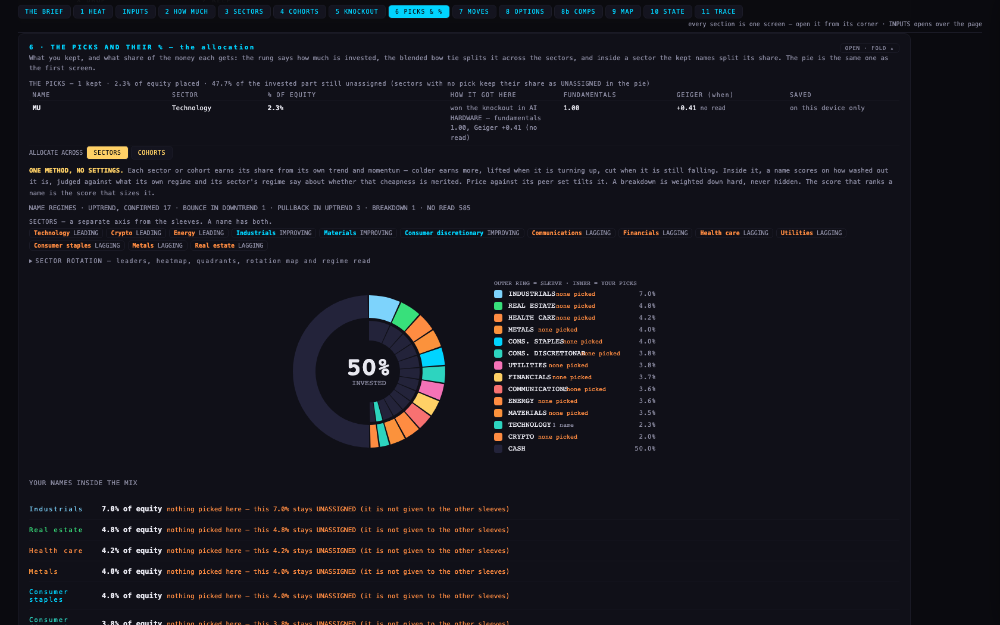
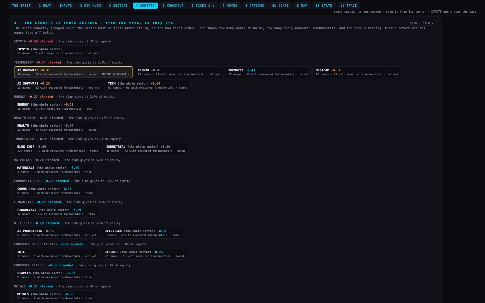
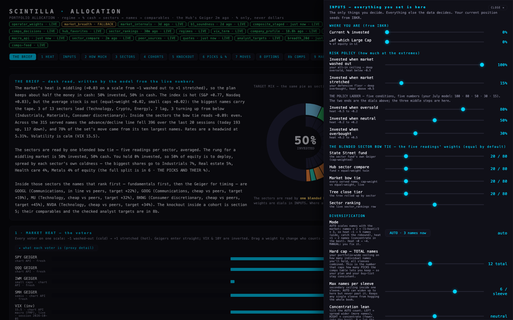

PA5 · Portfolio allocation — one blended sector bow tie, and the comps knockout made visible5 Oct 2026, night · allocation repo branch pa5-20261005 on top of PA4 (main @a169c80) · not deployed · the live page at allocation.scintillahub.ai stays PA4 until the coordinator fast-forwards main
Alan's tool now reads the sectors one way — a blend of the five sector readings the estate has, drawn as his bow tie — and the whole chain sits on one page, top to bottom: the market's heat → how much to invest → the blended bow tie → the cohorts in those sectors → the comps knockout inside a cohort, in the approved cards → the saved picks and their share of the money. Every label a non-trader would stop at is one plain sentence.
The pictures
The first screen at 1680 × 1050: the brief in plain words on the left, the pie on the right, the fourteen sections on the bar.

The blended sector bow tie. One bar per sector, hot at the top. The left wing is the cap-weighted read (the index names), the right wing the equal-weighted read (the average stock); they meet at the blend, the number TARGET MIX uses. The times of the four live readings are on the line above the chart.



The knockout. Inside the chosen cohort (AI HARDWARE tonight) the names are seeded by fundamentals and face off, first against last; the rounds run left to right, who beat whom on fundamentals, the Geiger only for timing. Early rounds are one line per duel; the last three rounds carry the approved cards.


The picks. The last names standing get KEEP / DROP in the swipe cards; KEEP writes a decision and puts the name into the allocation, where it takes its share of its sector's money.




Every section folded and open, at 1680 × 1050 and 1920 × 1080, is in shots/ (first-screen, first-screen-with-a-pick, dial-drawer, the-bow-tie, the-bow-tie-five-readings, knockout-round-1, knockout-the-final, knockout-the-picks-cards, the-picks-and-their-pct, and 00 to 12 for each section, -folded and -open). The readout file beside them holds the brief, the blend table, every voter and the whole bracket as text at both sizes. I opened and examined the pictures named above myself.
The blend — five readings per sector, one number
Each sector is read five ways, each already on the Geiger scale (−1 washed out … +1 stretched), and the five are averaged. The default weights are equal (20 each) and sit as dials in INPUTS, not on the first screen. Where a reading does not exist for a sector, the page names it and the other readings carry its weight.
| reading | what it is | side of the bow tie | weight | time tonight |
|---|---|---|---|---|
| State Street fund | the sector fund's own Geiger (XLK, XLE …) from the chart API | cap-weighted (the index names) | 20 | fund Geigers, every cycle (21:05 ET in the pictures) |
| Hub sector compare | the fund and its Invesco equal-weight twin, averaged — the Hub's compare strip | both halves | 20 | same call |
| Market bow tie | every served name in the sector: the cap-weighted read and the equal-weight read, live | both halves | 20 | same call |
| Tree close tier | the tree's close tier (5,300 common stocks and ADRs) rolled up by sector | equal-weighted | 20 | 20:21 ET |
| Sector ranking | the live sector_rankings row — the constituents' newest daily Geiger, published by the sector tool (H12 03, live again since 20:45 ET) | equal-weighted | 20 | 20:45 ET |
Tonight's blend (13 sectors; crypto and metals have no fund twin, no served-set read and no tree roll-up, so they read from two of the five and say "3 of 5 missing"):
| # | sector | blend | cap-weighted half | equal-weighted half | bow tie (equal − cap) | the plan's share of equity |
|---|---|---|---|---|---|---|
| 1 | Crypto | +0.59 | — | +0.59 | — | 2% |
| 2 | Technology | +0.54 | +0.80 | +0.44 | −0.36 | 2.3% |
| 3 | Energy | +0.27 | +0.46 | +0.20 | −0.25 | 3.6% |
| 4 | Health care | +0.00 | −0.16 | +0.14 | +0.30 | 4.2% |
| 5 | Industrials | −0.05 | +0.11 | −0.11 | −0.22 | 7% |
| 6 | Materials | −0.20 | −0.05 | −0.25 | −0.20 | 3.5% |
| 7 | Communications | −0.22 | −0.08 | −0.27 | −0.19 | 3.6% |
| 8 | Financials | −0.25 | −0.20 | −0.27 | −0.07 | 3.7% |
| 9 | Utilities | −0.28 | −0.26 | −0.30 | −0.04 | 3.8% |
| 10 | Consumer discretionary | −0.28 | −0.09 | −0.36 | −0.27 | 3.8% |
| 11 | Consumer staples | −0.35 | −0.33 | −0.37 | −0.04 | 4% |
| 12 | Metals | −0.37 | — | −0.37 | — | 4% |
| 13 | Real estate | −0.64 | −0.67 | −0.63 | +0.04 | 4.8% |
Top three: Crypto, Technology, Energy. Bottom three: Real estate, Metals, Consumer staples. Across the eleven fund sectors the blend averages −0.13 and the bow tie −0.12: the biggest names carry the sectors. That one voter, SECTOR BOW TIE (blended), weight 0.75, replaces the three separate sector voters PA3 added (sector compare 0.5, sector bow tie 0.5, market bow tie 0.25). B1's whole-market figure stays on the page as the soundness verdicts and is dated; it no longer votes on its own. The four-way methodology dial is gone.
What the knockout shows tonight — AI HARDWARE
The cohort chosen by default is the first cohort under the hottest sector with at least four measured names: AI HARDWARE, 39 names, 35 enter (two or more measured fundamentals), 4 sit out (AXTI, DLR, EQIX, ETN — fewer than two readings). Six rounds. The seeding and every duel are on fundamentals — C5's comps field: price (P/E, or P/S for a loss-maker), growth, margin and leverage, each against the name's own peers with far-out multiples dropped; the card says how many outliers were dropped. The Geiger decides only when two names are even (within 0.02).
| round | duels | what happened |
|---|---|---|
| Round 1 | 18 | MU over CIFR · NVDA over APLD · SNDK over WULF · SIMO over NBIS · ADI over QCOM · TSM over ARM · WDC over KLAC · ALAB over TEL · RMBS over LRCX · SMCI over CRWD · ANET over LITE · CORZ over P · AMAT over CRWV · ASML over MRVL · IREN over AMD · VRT over STX · INTC over CRDO · AVGO through on a bye |
| Round 2 | 9 | MU over AVGO · NVDA over INTC · SNDK over VRT · SIMO over IREN · ADI over ASML · TSM over AMAT · WDC over CORZ · ALAB over ANET · RMBS over SMCI |
| Round 3 | 5 | MU over RMBS · NVDA over ALAB · SNDK over WDC · SIMO over TSM · ADI through |
| Quarter-finals | 3 | MU over ADI · NVDA over SIMO · SNDK through |
| Semi-finals | 2 | MU over SNDK on fundamentals, 1.00 against 0.97 (better on price, leverage) · NVDA through |
| The final | 1 | MU over NVDA on fundamentals, 1.00 against 0.98 — better on price and leverage. The Geiger only says when: MU +0.41. |
The picks from this knockout, in the order they survived: MU (champion), NVDA (runner-up), SNDK, then SIMO and ADI. The plan holds about three names per sector at tonight's heat, so three pick cards are shown with KEEP / DROP. Nothing has been kept or dropped by Alan yet; the pictures of section 6 show one KEEP (MU) made with the write intercepted so no real decision was recorded. The only rows the table holds from this lane are the test rows the tests wrote (company PA5_TEST, source allocation-pa5-test).
What it says today (5 Oct, about 21:05 ET)
The word NEUTRAL no longer appears on its own anywhere a reader lands: the heat readout says MIDDLING with what that does to the money under it, the ladder's rungs say DEEPLY WASHED OUT · WASHED OUT · MIDDLING · STRETCHED · DEEPLY STRETCHED with the trader's word in small print, and TODAY is the sentence above. LC/SC LENS became BIG vs SMALL. The statistics (quartiles, counts, the five readings per sector with their weights) are in the five-readings table under the bow tie and in the AUDIT TRACE.
The chain, section by section
| # | section | what it does | feeds |
|---|---|---|---|
| — | THE BRIEF | the desk read in plain words, and the pie | — |
| 1 | MARKET HEAT | the voters (PA3/PA4's, plus the one blended sector voter) | the heat |
| 2 | HOW MUCH TO INVEST | the July ladder, its own screen; the rung in plain words | % invested |
| 3 | THE BLENDED SECTOR BOW TIE | one reading per sector, five ways blended; the chart; the five readings under it | each sector's share |
| 4 | THE COHORTS IN THOSE SECTORS | the Hub's cohorts as they are, under their sector in the bow tie's order, with the tree's reading and B1's soundness; click one | the cohort for the knockout |
| 5 | THE COMPS KNOCKOUT | seeded by fundamentals, who beat whom, the Geiger only for timing; KEEP / DROP on the last names standing → comps_decisions | the picks |
| 6 | THE PICKS AND THEIR % | the kept names with their share of equity, the pie (outer ring sectors, inner ring picks), the sector rotation block | the allocation |
| 7–11 | MOVES · OPTIONS · COMPARABLES · INPUT MAP · STATE · TRACE | as PA3/PA4 left them: the tranches, every name by category, the short list in cards, the comps sheet, the dials, the history, the arithmetic | — |
Tests — 20 before → 29 after
All 29 pass (node --test tests/ in the allocation worktree, headless against the local stand-in for Vercel; before the build the same command passed 20 of 20). New: the blend with every source present equals the weighted average of the five (checked on every sector that carries all five); a missing source renormalises the weights and names the missing one (on the pure function and on tonight's crypto and metals rows); the bow tie is drawn hot → cold with the readings' times; one sector voter in place of three and no dial; the chain's order and the plain-words sentence; the knockout is seeded by fundamentals, first plays last, won on fundamentals and only an even duel on the Geiger, the final's card marked; KEEP in the knockout writes through the page's own path (a test row) and the kept name takes its % of its sector. PA4's dial test became the blend-weights test (moving a weight to the tree alone redraws the pie). Two PA3 assertions that expected the bare word NEUTRAL now expect the sentence.
What could be wrong
- The blend's weights are a default, not a measurement. Equal weights are the plainest choice and are dials. Nothing yet says which of the five readings has predicted anything; G2's Geiger-vs-returns study is the place to learn that, and the weights can follow it.
- Two halves are not symmetric. The cap-weighted side has at most three readings (the fund, the compare's fund half, the served names by size); the equal-weighted side up to four. Crypto and metals have no cap-weighted read at all, and the page says so on the bar.
- The knockout judges on four readings and the peer set it has. A name with fewer than two measured fundamentals sits out (tonight AXTI, DLR, EQIX, ETN in AI HARDWARE). Alan on 5 Oct: "don't judge the output yet so much, think more of mechanics" — the mechanics are what this builds; the fundamentals table still covers under half the universe.
- The sector ranking is counted while it is at most three days old. It went live again at 20:45 ET tonight; if the publisher stops, the blend drops that reading and says "4 of 5".
- The pictures were taken on a local stand-in for Vercel, as PA3 and PA4 were; the chart API answers only the Hub's origin, so the subdomain reaches it through the rewrites already live since PA4.
What was not done
- Nothing was deployed. The live tool is PA4.
- No real KEEP or DROP was recorded; the picks table on the live site will be empty until Alan presses one.
- The cohorts are shown as they are (Alan: "we know that they're weak"). The sector-named cohorts (TECH, ENERGY …) are listed last under their sector and marked "the whole sector"; nothing was re-cut.
- The 8b short list (PA4's cards) still writes with source
allocation-pa4; the knockout writesallocation-pa5; the page reads both back.
The deploy, for the coordinator
In _ALLOC_DEPLOY: git fetch origin && git merge --ff-only origin/pa5-20261005 && git push origin main — Vercel auto-deploys project scintilla-allocation. Rollback: reset main to a169c80 (PA4) and force-push, or redeploy the previous Vercel deployment. Do not run DEPLOY_ALLOCATION.command (it copies the 10 Aug file over the live page). First check after deploy: the bow tie draws with four times on its READINGS TAKEN line and the badge sector_rankings reads LIVE. The test rows (company PA5_TEST, source allocation-pa5-test) may be deleted as PA4's were.
Decisions for Alan
- Equal weights for the five readings, or lean on one? Recommendation: equal, until G2 says which reading has earned more.
- The knockout's default cohort — the first cohort under the hottest sector with four measured names (AI HARDWARE tonight), or always the cohort of the sector the plan funds most (Industrials → BLUE CHIP)? Recommendation: the hottest sector, as built, because the bow tie's order is the one he reads first; one click changes it.
- Should a KEEP in the knockout also star the name on the Hub's lists? Recommendation: not yet — it goes into the allocation and the comps decisions table; the Hub guidance file already says it needs the live Hub.
PAGE SPECS
Report written by the PA5 lane (Claude Fable 5.1, Urth account, 5 Oct 2026 night). Pictures are headless Chromium at 1680 × 1050 and 1920 × 1080 from scripts/shots.mjs on the allocation branch. The blend arithmetic: blend = Σ weight × reading ÷ Σ weight over the readings present; the cap-weighted half averages the fund's Geiger, the compare's fund half and the served names weighted by market value; the equal-weighted half averages the twin fund, the served names one each, the tree's roll-up and the sector ranking; bow tie = equal − cap. The knockout: seeds by the fundamentals score (mean of up to four readings against the name's own peers, outliers out by C5's rule, a missing reading counts 0.5); a duel is won by the higher score when the gap is at least 0.02, otherwise by the higher Geiger timing ((1 − Geiger)/2 × regime fit); the loser order is the pick order after the champion.